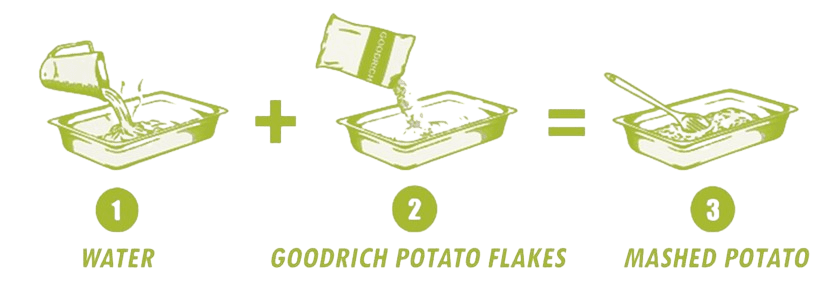

Potato flakes are among the most well-known and widely used potato products available.
Potato Flakes
Potato Flakes
Goodrich Cereals
Standard potato flakes are among the most well-known and widely used potato products available. They’re bright white in color and, when reconstituted, have the dry, mealy texture and delicious flavor that consumers expect from freshly cooked mashed potatoes. They belong atop any list of all-purpose ingredients for use in foodservice, bakery and general food manufacturing.
Potato Flakes are the most important form of dehydrated potato products among others including potato granules, pellets, powder, shredded and sliced potato. The main reason for the widespread usage of potato flakes is their unique ability to reconstitute even with cold water.
The preparation of dehydrated potato flakes starts with cooking and mashing the potatoes. Subsequently, the mashed potatoes are pressed on to a drum drier by a roller to form sheets. The mashed potato sheets then undergo the process of quick-drying, which brings the humidity level to the desired value. The dried sheets are broken and ground to the required density to yield top-quality potato flakes.
Goodrich Potato Flakes are different from others in the sense that only the finest potatoes are utilized for the production. Additionally, we use the best machinery and equipment to produce flakes that are on par with international standards. Goodrich Potato Flakes are apt for using anywhere, where one would require potato mash.
Why Goodrich's Potato Flakes Are The Best
Why Goodrich's Potato Flakes Are The Best
Goodrich's Potato Flakes offer yummy flavour with quick and easy preparation. We select, wash, peel, slice, mash and dry the potatoes using our proprietary process to extract top-grade potato flakes that deliver farm-fresh taste. All you have to do is add water to the potato flakes and watch the profits pile up with a cost that is less than the scratch, refrigerated or frozen potatoes. Goodrich's Potato Flakes will save your time, labour and costs altogether.

Potato Flakes Applications
Ways to use our potato flakes